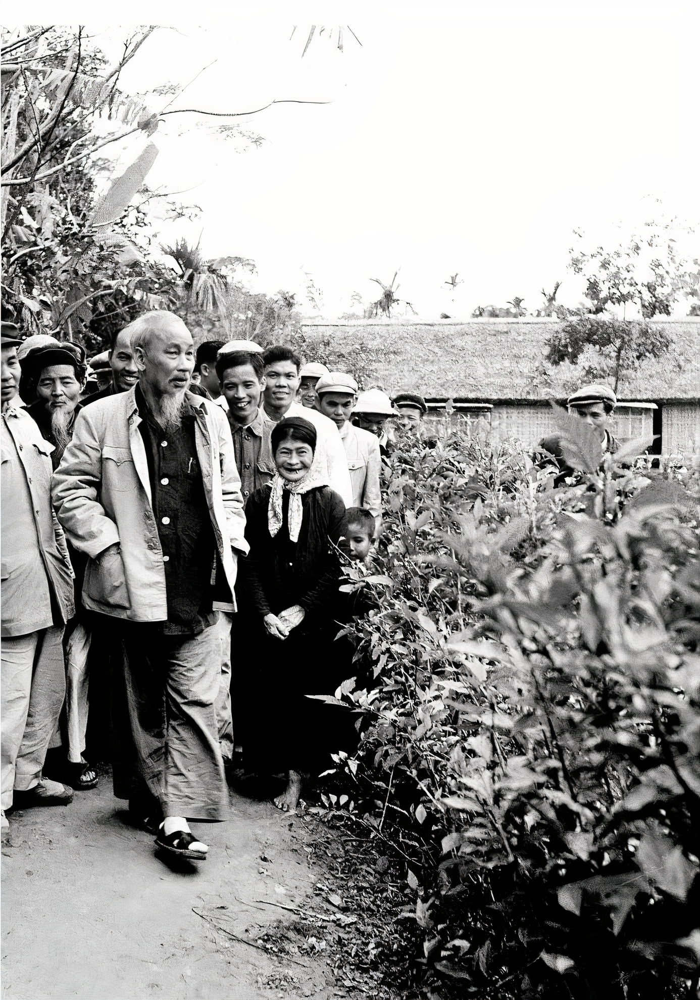

ĐÔI DÉP BÁC HỒ
Chủ tịch Hồ Chí Minh
ĐÔI DÉP BÁC HỒ
Đôi dép của Bác “ra đời’’ vào năm 1947, được ‘’chế tạo’’ từ một chiếc lốp ô tô quân sự của thực dân Pháp bị bộ đội ta phục kích tại Việt Bắc. Đôi dép đo cắt không dày lắm, quai trước to bản, quai sau nhỏ rất vừa chân Bác.
Trên đường công tác, Bác nói vui với các cán bộ đi cùng:
- Đây là đôi hài vạn dặm trong truyện cổ tích ngày xưa... Đôi hài thần đất, đi đến đâu mà chẳng được.
Gặp suối hoặc trời mưa trơn, bùn nước vào dép khó đi, Bác tụt dép, xách tay. Đi thăm bà con nông dân, sải chân trên các cánh đồng đang cấy, đang vụ gặt, Bác lại xắn quần cao lội ruộng, tay xách hoặc nách kẹp đôi dép...
Mười một năm rồi vẫn đôi dép ấy... Các chiến sĩ cảnh vệ cũng đã đôi ba lần “xin’’ Bác đổi dép nhưng Bác bảo “vẫn còn đi được’’.
Cho đến lần đi thăm Ấn Độ, khi Bác lên máy bay, ngồi trong buồng riêng thì mọi người trong tổ cảnh vệ lập mẹo giấu dép đi, để sẵn một đôi giày mới...
Máy bay hạ cánh xuống Niu-đê-li, Bác tìm dép. Mọi người thưa:
Có lẽ đã cất xuống khoang hàng của máy bay rồi... Thưa Bác....
- Bác biết các chú cất dép của Bác đi chứ gì. Nước ta còn chưa được độc lập hoàn toàn, nhân dân ta còn khó khăn, Bác đi dép cao su nhưng bên trong lại có đôi tất mới thế là đủ lắm mà vẫn lịch sự - Bác ôn tồn nói.
Vậy là các anh chiến sĩ phải trả lại dép để Bác đi vì dưới đất chủ nhà đang nóng lòng chờ đợi...
Trong suốt thời gian Bác ở Ấn Độ, nhiều chính khách, nhà báo, nhà quay phim... rất quan tâm đến đôi dép của Bác. Họ cúi xuống sờ nắn quai dép, thi nhau bấm máy từ nhiều góc độ, ghi ghi chép chép... làm tổ cảnh vệ lại phải một phen xem chừng và bảo vệ “đôi hài thần kỳ” ấy.
Năm 1960, Bác đến thăm một đơn vị Hải quân nhân dân Việt Nam. Vẫn đôi dép “thâm niên” ấy, Bác đi thăm nơi ăn, chốn ở, trại chăn nuôi của đơn vị. Các chiến sĩ rồng rắn kéo theo, ai cũng muốn chen chân, vượt lên để được gần Bác hơn. Bác vui cười nắm tay chiến sĩ này, vỗ vai chiến sĩ khác. Bỗng Bác đứng lại:
- Thôi, các cháu giẫm làm tụt quai dép của Bác rồi...

Nghe Bác nói, mọi người dừng lại cúi xuống yên lặng nhìn đôi dép rồi lại ồn ào lên:
- Thưa Bác, cháu, cháu sửa...
- Thưa Bác, cháu, cháu sửa được ạ...
Thấy vậy, các chiến sĩ cảnh vệ trong đoàn chỉ đứng cười vì biết đôi dép của Bác đã phải đóng đinh sửa mấy lần rồi...Bác cười nói:
- Cũng phải để Bác đến chỗ gốc cây kia, có chỗ dựa mà đứng đã chứ! Bác “lẹp xẹp” lết đôi dép đến gốc cây, một tay vịn vào cây, một chân co lên tháo dép ra:
- Đây! Cháu nào giỏi thì chữa hộ dép cho Bác...Một anh nhanh tay giành lấy chiếc dép, giơ lên nhưng ngớ ra, lúng túng. Anh bên cạnh liếc thấy, “vượt vây” chạy biến...
Bác phải giục:
- Ơ kìa, ngắm mãi thế, nhanh lên cho Bác còn đi chứ. Anh chiến sĩ lúc nãy chạy đi đã trở lại với chiếc búa con, mấy cái đinh:
- Cháu, để cháu sửa dép...Mọi người dãn ra. Phút chốc, chiếc dép đã được chữa xong. Những chiến sĩ không được may mắn chữa dép phàn nàn:
- Tại dép của Bác cũ quá. Thưa Bác, Bác thay dép đi ạ..
Bác nhìn các chiến sĩ nói:
- Các cháu nói đúng... nhưng chỉ đúng có một phần... Đôi dép của Bác cũ nhưng nó chỉ mới tụt quai. Cháu đã chữa lại chắc chắn cho Bác thế này thì nó còn ‘’thọ’’ lắm! Mua đôi dép khác chẳng đáng là bao, nhưng khi chưa cần thiết cũng chưa nên... Ta phải tiết kiệm vì đất nước ta còn nghèo...